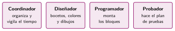
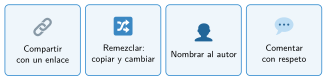

Trabajar en equipo en línea
🤔 Pienso5 min
Qué hago aquí: Piensa un momento y contesta con lo que ya sabes. No pasa nada si no lo sabes: es para empezar.
En el último trabajo en grupo, ¿cómo os repartisteis las tareas? ¿Funcionó?
📖 Leo y aprendo15 min
Qué hago aquí: Lee despacio, mira los dibujos y los ejemplos, y quédate con la idea clave del final.
Scratch y Code.org permiten compartir proyectos con un enlace. Otras personas pueden verlos, probarlos y remezclarlos: hacer una copia y cambiarla. Al remezclar, se nombra siempre al autor original.
En un equipo, cada persona tiene un rol:


✏️ Hago25 min
Qué hago aquí: Haz las actividades en orden. Empieza siempre por las básicas.
Comparte tu app o tu juego con el enlace y escríbelo aquí.
Prueba el proyecto de un compañero y escríbele un comentario con las normas: algo bueno y una mejora.
Une cada rol con su tarea.
| Diseñador • | • Hace las pruebas |
| Programador • | • Dibuja los bocetos |
| Probador • | • Monta los bloques |
Remezcla un proyecto de la clase. Escribe de quién es el original y qué has cambiado.
✏️ Puedes responder escribiendo, con un dibujo o un esquema, o contándolo en voz alta.
🚀 Amplío (si quieres saber más)
Qué hago aquí: ¿Has terminado? Lee la curiosidad o elige el reto. Es voluntario.
Busca qué significan las letras BY, SA y NC de las licencias Creative Commons. ¿Cuáles tiene un proyecto de Scratch?
✅ Compruebo5 min
Qué hago aquí: Contesta sin mirar la ficha y marca cómo lo llevas.